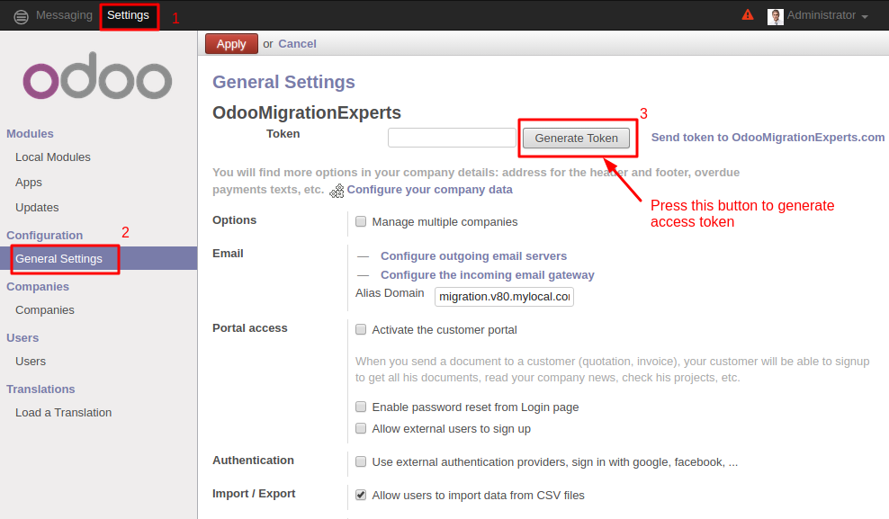
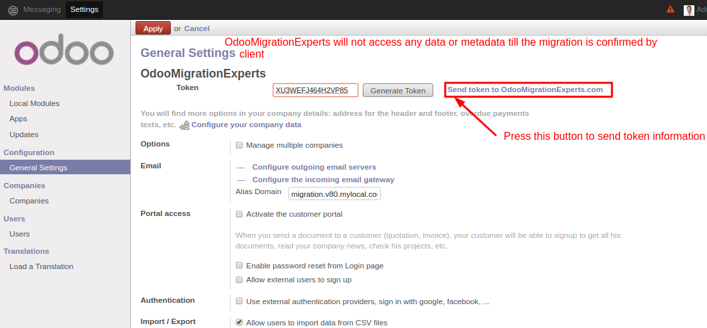
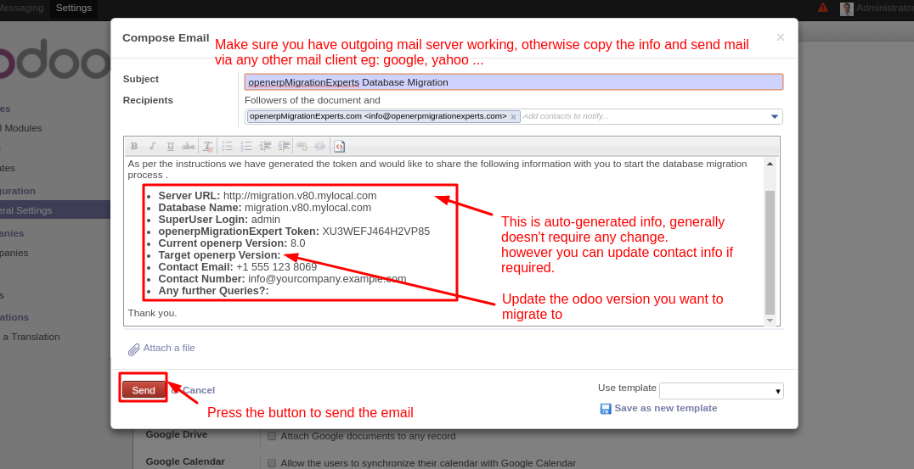

Configuration
- Go to Settings -> General Settings. You will see a button "Generate Token".
Press the button to generate a Token. (screenshot below)

- Copy the generated token and send to OdooMigrationExperts by
email with the information below or Just press the 'Send token to OdooMigrationExperts.com' button (screenshot below)
- Server URL (URL used to access the database to be migrated)
- Super User login (generally admin)
- Token (generated above)

-
Send the email by pressing Send button on opened wizard (screenshot below)
(NOTE: Make sure you have Outgoing mail server working, if not please use any third party email client (eg:gmail, yahoo) to send this information)

For any further query please contact us at OdooMigrationExperts.